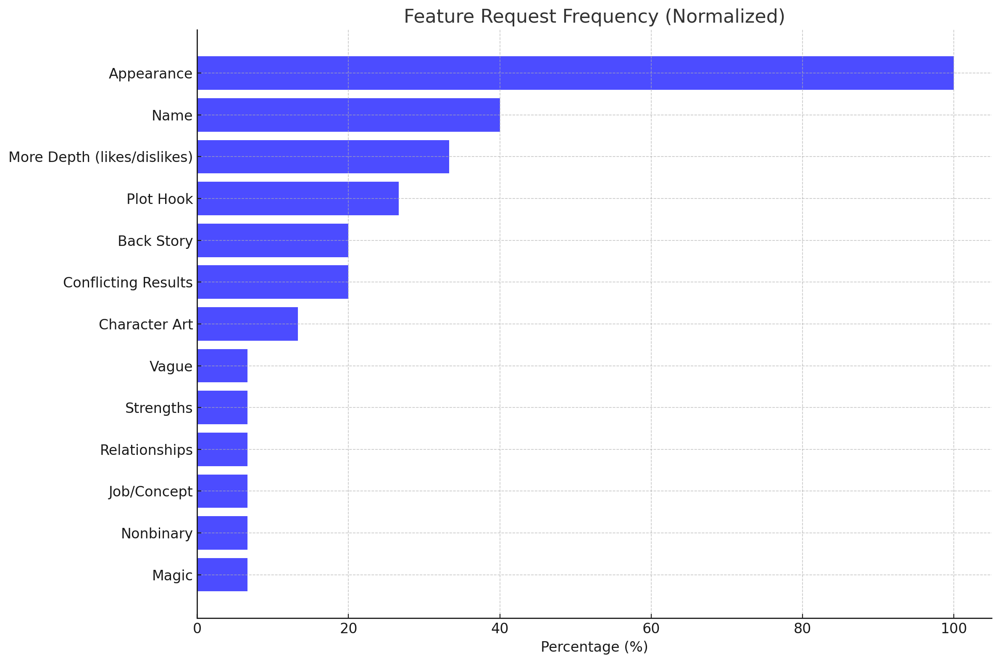

Current Version: V7.4 (8 Aug 2023)
Resources page: I realize there's a lot of resources that can help others, so we'll add a page to link to them. Also a lot of people I'd like to credit.
Appearance: This will likely turn out to be another generator in itself, about the same size as the existing one. It'll have to generate hair, skin, size, race, fashion, etc. We'll have to start thinking in what order we want to do this.
Are personalities based off appearance or vice versa? Say, you have a kung fu character. They'd bias towards being muscular. But say it's the other way around, where you want a guard, a mook, or a love interest to look a certain way, and then generate their personality.
Palette: I'm actually more excited about this than the appearance. One idea is to generate a primary color around a personality. If a character is short-tempered, they'd bias to red. If they were somber, they'd be purple or gray. And so on.
Then we'd generate complementary colors and such. There's palette algorithms. Primary red, secondary green, with bands of cyan.
It's possible to generate skin color against that too, e.g. dark, light, or yellower.
We can also use these colors to search for similar palettes from Lospec and such.
Thanks for those who answered the survey. After 3 long years, we have finally actually gone through each of them. Here's the results, indexed and ranked by popularity:

Some examples include: Hair color, eye color, skin color, body type, hair type, clothing
There's three challenges here
DONE. It's basing off the Moby Word List, Grady Ward. It could still be improved, currently heavily biased towards US names. But characters don't have races yet, so we'll revisit this later.
Users have shown requested things like: likes/dislikes, birthdays, personality traits, preferred weapons, ethnicity, religion, or sexual orientation
This is a bit more difficult, because it's not just a matter of adding more things. We have to make sure that the things we add are actually useful, and that they don't conflict with each other. For example, if we add a birthday, we have to make sure that it doesn't conflict with the age. If we add a personality trait, we have to make sure that it doesn't conflict with the wants. We have to make sure that the things we add actually improve the character, and that they don't conflict with each other.
We can expand this and we'll look into ways to make it combo well with ChatGPT.
This is one reason I started this tool. There's been some amazing outcomes doing this with AI, but I'd like to look for a way without paying AI to generate them.
This should be reduced with engine tweaks, but we'll monitor this. Likely we'll have a button so you can flag inconsistencies.
Visual stuff. Pre-requisite for this is appearance. A lot of people submitted this in the survey before AI art was a thing; I'm not sure if it's still relevant.
Several features like clearer results, relationships, job concepts, nonbinary options, and magic have been highlighted. Please bring things like this up if you feel strongly about them.
There's some nice suggestions here, but they won't be in version 7 because of the difficulty of implementation with the current engine.
Please let us know what you'd like to see in the survey